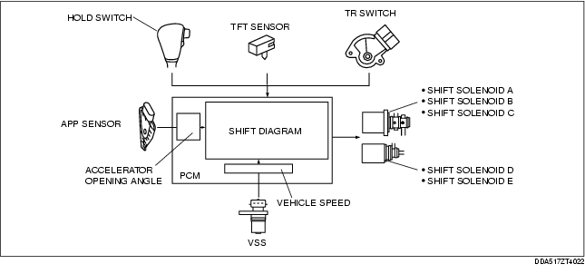

Shift control structure (4AT) [FN4A-EL]
Features
• The PCM selects and determines the shift diagram on the results of the range and driving mode judgements. Then, based on shift diagram, the PCM sends the signal duty-cycle type solenoid valves and the ON/OFF type solenoid valves, according to the VSS signal and the APP sensor signal, to perform shifting.
Structure
System diagram
